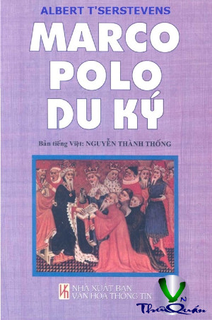

« Back
Marco Polo Du Ký
By Albert T'serstevens

NHẬP ĐỀ
CUỘC ĐỜI CỦA MARCO POLO
MARCO POLO DU KÝ
ẢNH HƯỞNG CỦA MARCO POLO DU KÝ
VÀI HÀNG VỀ BẢN DỊCH HIỆN NAY
BẮT ĐẦU CÂU CHUYỆN CỦA QUYỂN SÁCH
ĐẠI HÃN CÒN HỎI THĂM VỀ NHỮNG CÔNG VIỆC
ĐẠI HÃN PHÁI MARCO LÊN ĐƯỜNG
CUỘC CHUYỆN TRÒ THÂN MẬT VỀ THẾ GIỚI
ĐÂY LÀ CHUYỆN KỂ VỀ VƯƠNG QUỐC MOSUL
NHỮNG NGƯỜI KI TÔ GIÁO HẾT SỨC KINH HÃI
ĐÂY LÀ CHUYỆN KỂ VỀ THÀNH PHỐ TORIS SANG TRỌNG
ĐÂY LÀ CHUYỆN KỂ VỀ THÀNH PHỐ LỚN JASDI
ĐÂY LÀ CHUYỆN KỂ VỀ CON DỐC CAO
ĐÂY LÀ CHUYỆN KỂ VỀ SƠN THẦN GIÀ
ĐÂY LÀ CHUYỆN KỂ VỀ NHỮNG NGỌN NÚI
ĐÂY LÀ CHUYỆN KỂ VỀ THÀNH PHỐ LỚN SAN MARCAN
ĐÂY LÀ CHUYỆN KỂ VỀ TỈNH LỚN TANGUT
ĐÂY LÀ CHUYỆN KỂ VỀ THÀNH PHỐ CAMPICION
CINGHIS KHAN THAM KHẢO
ĐÂY LÀ CHUYỆN KỂ VỀ THẦN LINH
ĐÂY LÀ CHUYỆN KỂ VỀ VƯƠNG QUỐC ERGINUL
ĐÂY LÀ CHUYỆN KỂ VỀ CIANDU VÀ
ĐẠI HÃN TẤN CÔNG CHỐNG LẠI NAIAN NHƯ THẾ NÀO?
ĐẠI HÃN TRỞ VỀ THÀNH PHỐ CANBALUE NHƯ THẾ NÀO?
ĐÂY LÀ CHUYỆN KỂ VỀ CUNG ĐIỆN
ĐÂY LÀ CHUYỆN KỂ VỀ ĐẠI LỂ
ĐẠI HÃN ĐI SĂN NHƯ THẾ NÀO?
ĐẠI HÃN ĐÃ CAI QUẢN TRIỀU ĐÌNH
ĐÂY LÀ CHUYỆN KỂ VỀ 12 VỊ QUAN ĐẠI THẦN
ĐẠI HÃN GIÚP DÂN LÚC LÚA MÌ
ĐÂY LÀ CHUYỆN KỂ VỀ LÂU ĐÀI CACIANFU
ĐÂY LÀ CHUYỆN KỂ VỀ CON SÓNG LỚN CARAMORAN
ĐÂY LÀ CHUYỆN KỂ VỀ TỈNH TEBET
ĐÂY LÀ CHUYỆN KỂ VỀ TỈNH GAIANDU
ĐÂY LÀ CHUYỆN KỂ VỀ TỈNH ZARDANDAN
NGƯỜI TA ĐI XUỐNG MỘT ĐƯỜNG DỐC DÀI NHƯ THẾ NÀO?
ĐÂY LÀ CHUYỆN KỂ VỀ TỈNH AMU
ĐÂY LÀ CHUYỆN KỂ VỀ THÀNH PHỐ CINAGLU
ĐẠI HÃN XÂM CHIẾM TỈNH MANGI NHƯ THẾ NÀO?
ĐÂY LÀ CHUYỆN KỂ VỀ THÀNH PHỐ COIGANGUI
ĐÂY LÀ CHUYỆN KỂ VỀ THÀNH PHỐ SINGUI
ĐÂY LÀ CHUYỆN KỂ VỀ THÀNH PHỐ QUINSAY
ĐÂY LÀ CHUYỆN KỂ VỀ LỢI TỨC HÀNG NĂM
ĐÂY LÀ CHUYỆN KỂ VỀ THÀNH PHỐ FUGUI SANG TRỌNG
QUÂN CỦA ĐẠI HÃN TRÊN ĐẢO
ĐÂY LÀ CHUYỆN KỂ VỀ VÙNG ĐẤT CIAMPA RỘNG LỚN
ĐÂY LÀ CHUYỆN KỂ VỀ CÁC ĐẢO SANDUR VÀ CONDUR
ĐÂY LÀ CHUYỆN KỂ VỀ ĐẢO GAVENISPOLA
ĐÂY LÀ CHUYỆN KỂ VỀ TỈNH LỚN MAABAR
ĐÂY LÀ CHUYỆN KỂ VỀ VƯƠNG QUỐC MUTFILI
ĐÂY LÀ CHUYỆN KỂ VỀ TỈNH LAR,
ĐÂY LÀ CHUYỆN KỂ VỀ THÀNH PHỐ CAIL
ĐÂY LÀ CHUYỆN KỂ VỀ VƯƠNG QUỐC TANA
ĐÂY LÀ CHUYỆN KỂ VỀ ĐẢO SCOTRA
ĐÂY LÀ CHUYỆN VỀ ĐẢO ZANGHIBAR
ĐÂY LÀ CHUYỆN KỂ VỀ TỈNH ADEN
ĐÂY LÀ CHUYỆN KỂ VỀ THÀNH PHỐ CALATU
ĐIỀU ĐẠI HÃN NÓI VỀ TỔN THẤT
ABAGA PHÁI CON TRAI ĐI ĐÁNH VUA CAIDU NHƯ THẾ NÀO?
ARGON HIỆU TRIỆU QUÂN LÍNH CỦA MÌNH
ACOMAT TRẢ LỜI CHO CÁC SỨ GIẢ
ARGON BỊ BẮT VÀ ĐƯỢC GIẢI THOÁT NHƯ THẾ NÀO?
CÁC QUAN CẬN THẦN TỎ LÒNG KÍNH TRỌNG
ĐÂY LÀ CHUYỆN KỂ VỀ VUA CANCI Ở PHÍA BẮC
ĐÂY LÀ CHUYỆN KỂ VỀ TỈNH ROSIE
BARCA VÀ QUẢN LÍNH CỦA ÔNG
ĐÂY LÀ CHUYỆN KỂ THÊM
TOCTAI TRUY CỨU NOGAI VỀ CÁI CHỂT
VUA NOGAI ĐÁNH GIẶC MỘT CÁCH